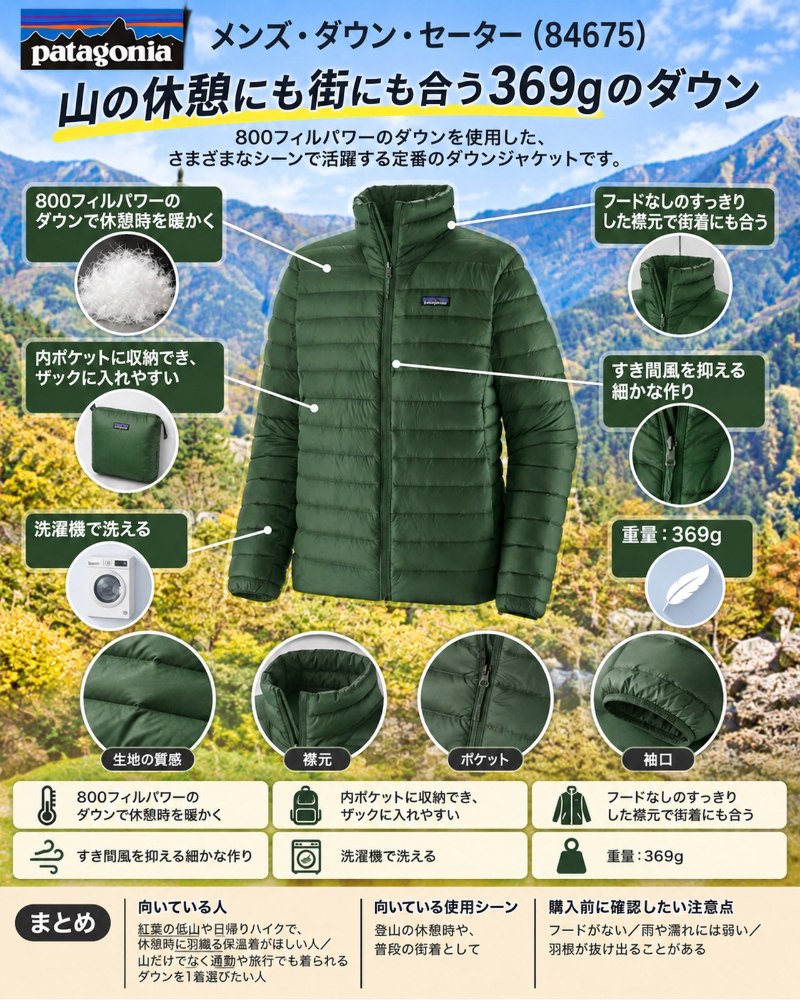

11月19日から冬型の気圧配置になり、平地でも急に冷え込んできました。高い山はすでに冬山の装いですが、高尾や六甲など近郊の低山はまだ紅葉の時期。この週末に出かけるなら、山頂の休憩でも帰りの街歩きでも羽織れる保温着が1枚あると安心です。今回紹介するのは、パタゴニアの「メンズ・ダウン・セーター」（品番 84675）。800フィルパワーのダウンを100%使った、フードのないジャケットタイプのダウンです。紅葉の低山で休憩着を探している人、そして山と街の両方で使える1着を選びたい人に向きます。
基本スペック
※仕様・価格は2026年11月19日時点の表示です。サイズはブランドの商品ページで確認してください（国内で販売されないサイズもあると注記されています）。
| 項目 | 内容 |
|---|---|
| 商品名 | メンズ・ダウン・セーター |
| 品番 | 84675 |
| 重量 | 369g |
| 表地 | 20デニールのリサイクル・ナイロン100%（DWR加工） |
| 保温材 | 800フィルパワーのダウン100%（RDS認証） |
| フィット | レギュラーフィット |
| カラー | Treeline Green、Black、New Navy、Summit Blue、Glacial Blue、Den Brown |
| 価格 | 39,600円（税込） |
800フィルパワーのダウンで休憩時を暖かく
800フィルパワーのダウン100%が、休憩時の冷えを和らげます。RDS（責任あるダウン基準）の認証を受けた素材です。風が当たる山頂で汗が冷え始めたとき、さっと羽織る用途に合います。
内ポケットに収納でき、ザックに入れやすい
内側のジッパー式チェストポケットに、本体をたたんで収納できます。カラビナ用のループも付いています。登りでは脱いでザックへ、休憩で出すという使い方がしやすい作りです。
すき間風を抑える細かな作り
フロントのジッパーにはストームフラップとあご当てが付き、袖口は伸縮性ナイロンの縁取り、裾はコードロックで調節できます。ポケットは、ジッパー付きハンドウォーマーポケット2つ、内側のジッパー式チェストポケット、内側のドロップイン型ポケット2つ。手袋や行動食を分けて入れられます。
洗濯機で洗える
取り扱い表示では、冷水での洗濯機洗いと低温のタンブル乾燥ができます。街でも日常的に着るなら、手入れのしやすさは利点です。
フードなしのすっきりした襟元で街着にも合う
フードがなく、襟元がすっきりしているので、街では普段着に合わせやすいタイプです。シャツやクルーネックのニットの上に重ねたり、通勤時にジャケットの代わりとして羽織ったりする使い方が考えられます。カラーはBlackやNew Navyのような落ち着いた色から、Treeline Greenのような色みのある色まで6色。旅行では、収納して持ち歩き、朝晩の冷え込みや冷房の効いた乗り物で羽織る1枚にもなります。
デメリット・注意点
- フードがない：頭まわりは覆えません。稜線の強風や首まわりの冷えが心配な日は、フード付きのシェルを重ねるか、ネックウォーマーなどを用意しましょう。
- 雨や濡れには弱い：表地にはDWR（はっ水）加工がありますが、濡れる状況には向きません。雨の日は中間着として使い、今週のように荒天や雪の予報がある日は、レインウェアとの併用が前提です。
- 羽根が抜け出ることがある：フェザーやダウンが抜け出てくる場合があると注記されています。
- 乾燥機の使い方に注意：取り扱い表示では、漂白剤とアイロン・スチームは使えず、タンブル乾燥は低温です。
向いている人・向いていない人
◎向いている人
- 紅葉の低山や日帰りハイクで、休憩時に羽織る保温着がほしい人
- 山だけでなく通勤や旅行でも着られるダウンを1着選びたい人
- 洗濯機で手入れできるダウンを探している人
△向いていない人
- フード付きで頭まで保温したい人（フーディタイプやほかのモデルを検討）
- 雨や湿雪の中で、レインウェアなしで着たい人
まとめ
パタゴニアの「メンズ・ダウン・セーター」は、800フィルパワーのダウン100%を使った重量369gのダウンジャケットです。内ポケットに収納でき、山の休憩着としても、シャツやニットに重ねる街着としても使えます。フードがないこと、濡れに弱いことを理解したうえで、冷え込みが強まる晩秋から冬の1着として検討してみてください。
この記事で紹介した商品
価格・重量・在庫は各ブランド公式サイトの記載（確認日つき）にもとづきます。商品を押すと、購入先を選べます。
この記事にはアフィリエイト広告が含まれます。リンク先での購入により、当サイトが報酬を受け取る場合があります。山行の前には、最新の気象とルートの状況を必ずご確認ください。